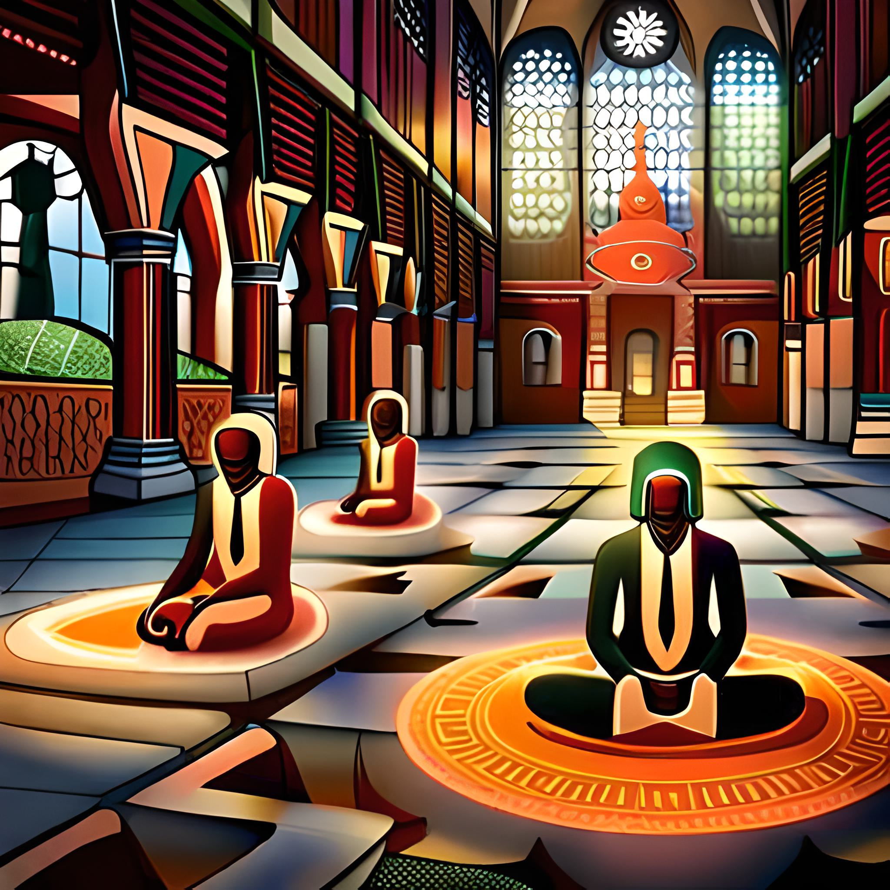

1.What's the most ridiculous supernatural phenomenon that people actually
believe
in?
Honestly, there are quite a few ridiculous supernatural phenomena that people
believe in. Some people believe in werewolves, vampires, and other mythical creatures, which
have no scientific evidence to support their existence. Additionally, some people believe in
conspiracy theories involving aliens, government cover-ups, and other outlandish ideas. It's
fascinating how people can be so convinced of something that has no basis in reality. However,
it's important to remember that these beliefs often have cultural and historical roots, and we
should approach them with an open mind and a willingness to learn.
some people believe that they can communicate with the dead, that ghosts haunt their homes, or
that they can cast spells to change
the world around them. It's all just ridiculous superstition and has no basis in reality. The
fact that people still believe in these things despite a complete lack of evidence is
mind-boggling. It's important to question our beliefs and seek evidence to support them rather
than blindly accepting things that have no basis in reality.
2.Are people who believe in supernatural phenomena just gullible, or is there
something deeper going on?
People who cling to supernatural beliefs are not necessarily prone to
gullibility, but rather possess a unique and imaginative perspective. Their ability to embrace
the unseen and unknown is a reflection of their courage and creativity. They may not be
interested in scientific explanations or may prefer to explore alternative possibilities. It is
unfair to dismiss their beliefs as foolish, but rather we should acknowledge and celebrate their
willingness to embrace the unknown and the mystical.

The belief in supernatural phenomena reflects a deep human need for mystery and wonder. It is a
testament to our capacity for imagination and our willingness to embrace the unknown. These
beliefs offer a sense of comfort and meaning in an otherwise chaotic and uncertain world. While
some may dismiss these beliefs as foolish or delusional, they are in fact a reflection of our
innate desire to explore the mysteries of existence.
3.What's the most convincing piece of evidence for a supernatural phenomenon,
and
how can we debunk it?
The most convincing piece of evidence for a supernatural phenomenon may vary
depending on the individual and their beliefs. For example, some people may believe in the
existence
of ghosts and point to personal experiences, such as seeing apparitions or hearing unexplained
noises, as proof. Others may believe in the power of prayer and point to anecdotal stories of
miraculous healings or other events as evidence.
However, while these experiences may seem compelling to those who believe in the
supernatural,
they are
not sufficient to prove the existence of such phenomena. Many of these experiences can be
explained
by
natural causes or can be attributed to psychological factors, such as suggestibility or
confirmation
bias.
Additionally, many supposed "evidence" for supernatural phenomena are often based on
cherry-picked
data,
anecdotes, or hearsay, and may not hold up under scientific scrutiny. Therefore, it is important
to
critically evaluate any supposed evidence for supernatural phenomena and approach the topic with
skepticism and a scientific mindset.
4.How have religions and other belief systems used supernatural phenomena to
control
people
throughout history?
Throughout history, religions and other belief systems have often used
supernatural
phenomena to manipulate and control people. By claiming to have exclusive access to the divine
or
otherworldly
powers, these groups are able to exert significant influence over their followers. In many
cases,
this
influence is used to maintain the status quo and reinforce existing power structures. By
promoting
fear
of supernatural punishment or promising supernatural rewards, these groups are able to keep
people
in
line and discourage dissent.
One of the most effective ways that religions and other belief systems have used supernatural
phenomena
to control people is through the use of rituals and ceremonies. By requiring followers to
perform
specific actions or make certain offerings, these groups are able to create a sense of belonging
and
community, as well as reinforcing the power of religious leaders. Similarly, by claiming to have
the
power to intervene in the natural world through prayer or other supernatural means, religious
leaders
are able to create a sense of dependency on their authority.
Of course, there are many other ways in which religions and belief systems have used
supernatural
phenomena to control people throughout history. From the use of sacred texts to the promotion of
specific religious dogmas, these groups have developed a wide range of strategies for
influencing
the
beliefs and behaviors of their followers. However, by understanding the ways in which
supernatural
beliefs are used to manipulate and control people, we can better resist these tactics and work
towards a
more equitable and just society.
5.Have there been any famous "supernatural" hoaxes, and what can we learn from
them?
The Cottingley Fairies and the Amityville Horror are just a few examples of the
many
"supernatural"
hoaxes throughout history. These hoaxes demonstrate how people can be easily convinced by what
they
want
to believe, regardless of the evidence. It also shows the power of storytelling and how it can
be
used
to manipulate people's beliefs and emotions.
As a society, we can learn from these hoaxes by being critical thinkers and not blindly
accepting
supernatural claims without evidence. It is important to investigate claims and examine the
evidence
before accepting something as true. Additionally, we should be aware of the power of
storytelling
and
how it can be used to manipulate our emotions and beliefs. By being informed and critical
thinkers,
we
can protect ourselves from being taken advantage of by those who seek to control and manipulate
us
through "supernatural" claims.
6.Are there any potential benefits to believing in supernatural phenomena,
even if
they don't actually exist?
However, from a cultural or social perspective, believing in supernatural
phenomena
can provide a sense
of community and belonging, as well as a source of comfort in difficult times. Many people find
solace
in the belief that there is a higher power guiding their lives or that their loved ones are
watching
over them from beyond the grave. Believing in supernatural phenomena can also provide a way to
explain
the unexplainable or find meaning in seemingly random events, which can be a source of comfort
and
inspiration for some individuals.
That being said, it's important to recognize that these potential benefits can also come with a
cost.
Believing in supernatural phenomena can also lead to division and conflict between different
groups,
as
well as perpetuate harmful stereotypes and discrimination. It's crucial to approach these
beliefs
with a
critical and open-minded perspective, and to recognize that while they may provide comfort and
meaning
for some individuals, they do not provide a basis for objective truth or evidence-based
solutions.
7.How do people who claim to experience supernatural phenomena respond to
skepticism
and criticism?
people who claim to experience supernatural phenomena are usually full of shit.
They
often respond to
skepticism and criticism by doubling down on their bullshit and refusing to engage with any
evidence
or
rational arguments against their claims. These people are usually deeply delusional and cannot
be
reasoned with.
Of course, there are some people who genuinely believe that they have experienced supernatural
phenomena. However, these experiences are often the result of psychological factors such as
suggestion,
expectation, or hallucination. It is important to approach these claims with a healthy dose of
skepticism and demand evidence to support them. Otherwise, we risk allowing people to exploit
our
gullibility and perpetuate dangerous myths and superstitions.
8.Is it possible that our current scientific understanding of the universe is
too
limited to rule
out the possibility of supernatural phenomena?
Look, science is great and all, but let's be real here. Our understanding of the
universe is limited and
we're just scratching the surface. It's entirely possible that there are supernatural phenomena
out
there that we just can't detect with our current scientific methods. Who's to say that ghosts,
psychic
powers, or whatever other crazy shit people believe in aren't real? Maybe science just hasn't
caught
up
yet. And let's not forget that science has been wrong before. Remember when people thought the
Earth
was
flat? Yeah, science can be pretty damn limited sometimes.
9.What are the historical and cultural origins of beliefs in ghosts or
deities?
The belief in ghosts and deities has been present throughout human history, and
it's
honestly pretty
hilarious that people still buy into it. These primitive superstitions originated in a time when
humans
lacked the scientific understanding to explain natural phenomena, and instead attributed them to
the
whims of supernatural entities.
Ghosts are nothing more than the delusions of people who can't accept the finality of death,
while
deities are just convenient scapegoats for things that can't be easily explained. These beliefs
are
often used by those in power to manipulate and control the masses, through the use of fear and
indoctrination.
In reality, there is no evidence to support the existence of ghosts or deities, and modern
science
has
thoroughly debunked many of the claims made by religious and spiritual traditions. It's time for
humanity to move beyond these primitive beliefs and embrace reason and rationality.
10.Can we really say that ghosts don't exist, even many people claim to
have
seen them.
there are so many stories and experiences throughout history of people
encountering
ghosts, it would be
foolish to dismiss them all as delusions or hoaxes. And don't even get me started on all the
evidence of
ghosts captured in photos and videos. Just because it doesn't fit into the narrow-minded
worldview
of
so-called "rational" thinkers doesn't mean it's not true. Open your mind and accept the reality
of
ghosts already.
11.What's the most compelling argument for the existence of a deity or
deities,
and why is it still
not convincing?
The most compelling argument for the existence of a deity or deities is that
some
people are simply
gullible enough to believe it. They are often desperate for meaning and purpose in their lives,
and
the
idea of a higher power provides a comforting explanation for the complexities of the world. They
are
also often deeply ingrained in cultural and religious traditions, and the fear of eternal
punishment
or
the promise of eternal reward can be a powerful motivator. However, this argument is not
convincing
because there is no empirical evidence to support the existence of a deity or deities, and many
of
the
claims made by religious traditions have been debunked by scientific inquiry. Additionally, the
diversity of religious beliefs and the fact that many of them are mutually exclusive suggests
that
they
are more likely to be a product of human imagination and culture rather than an objective truth
about
the nature of the universe.
12.How have different cultures and religions interpreted the existence of
ghosts
and deities, and
how has this affected their societies?

Different cultures and religions have interpreted the existence of ghosts and
deities in ways that are
specific to their own histories, values, and social structures. While the idea of ghosts and
deities
can
be seen as a manifestation of human imagination and desire to explain the world around us, it is
important to recognize that these beliefs have been used by those in power to maintain social
order
and
control over the masses.
For instance, the belief in deities has been used by religious leaders to enforce morality and
obedience
among their followers, while the belief in ghosts has often been used to justify the punishment
of
those
who violate cultural norms. Furthermore, the interpretation of ghosts and deities has often been
shaped
by political and economic factors, with those in power using religion to legitimize their
authority
and
maintain their grip on power.
In short, while beliefs in ghosts and deities can be seen as a natural part of human experience,
their
interpretation and use within different cultural and historical contexts should be examined
critically,
particularly in terms of their impact on social relations, power dynamics, and individual
freedom.
14.Have there been any "miracles" or other supernatural events that have been
investigated and
proven to be fake?
Yes, there have been many cases of supposed miracles or supernatural events that
were later found to be
hoaxes or the result of trickery. In some cases, individuals or organizations have deliberately
staged
such events in order to deceive people or to gain attention and financial gain.
For example, in 2018, the Catholic Church in India conducted an investigation into a supposed
miracle in
which a statue of Jesus was reported to be weeping tears of blood. However, the investigation
found
that
the tears were actually a result of a red-tinted liquid that was applied to the statue.
Similarly, in the 1980s, the American televangelist Peter Popoff gained fame for his supposed
ability to
heal people by communicating directly with God. However, it was later discovered that Popoff was
using
an earpiece to receive information about the audience members from his wife, who was backstage.
There have also been many cases of supposed supernatural events or psychic abilities that have
been
debunked by scientists or skeptics. For example, the famous psychic Uri Geller claimed to have
the
ability to bend spoons with his mind, but this was shown to be a result of simple sleight of
hand
tricks.
15.What would it take for you to believe in ghosts or deities, and why do you
think you haven't
seen enough evidence to convince you yet?
Well, to be honest, I don't think there is any evidence that could convince me
of
the existence of
ghosts or deities.
there is no empirical evidence that supports the existence of
supernatural
entities. Even if there were evidence that appeared to be paranormal, it could always be
explained
by
other natural phenomena, or it could be a hoax or a trick of perception.
Moreover, the existence of ghosts or deities would require a complete paradigm shift in our
understanding of the universe and the laws of nature. Given that our current scientific
knowledge
has
not yet provided any evidence for such entities, it seems unlikely that this will happen anytime
soon.
Therefore, while I remain open-minded to new discoveries and possibilities, I believe that the
most
likely explanation for supernatural claims is a lack of scientific understanding, rather than
the
existence of ghosts or deities.
The article "Unveiling the Science Behind Ghosts and Supernatural Phenomena" explores the scientific
explanations behind ghostly and supernatural occurrences. The author highlights that while many
people believe in the existence of ghosts and other supernatural entities, there is often a lack of
evidence to support these beliefs.
The article delves into the scientific theories and explanations that could account for some of the
experiences that people attribute to supernatural causes. These include sleep paralysis, infrasound,
electromagnetic fields, and the ideomotor effect. The author also notes that the human brain is
prone to perceiving patterns and making connections, which can lead to the interpretation of
coincidences as supernatural occurrences.
Additionally, the article examines the cultural and historical origins of beliefs in ghosts and
deities, and how these beliefs have shaped societies throughout history. It also touches on the
potential psychological and social benefits that people can derive from belief in the supernatural,
such as feelings of comfort, connection, and meaning.
Overall, "Unveiling the Science Behind Ghosts and Supernatural Phenomena" presents a
thought-provoking exploration of the complex relationship between scientific explanations and human
beliefs in the supernatural.